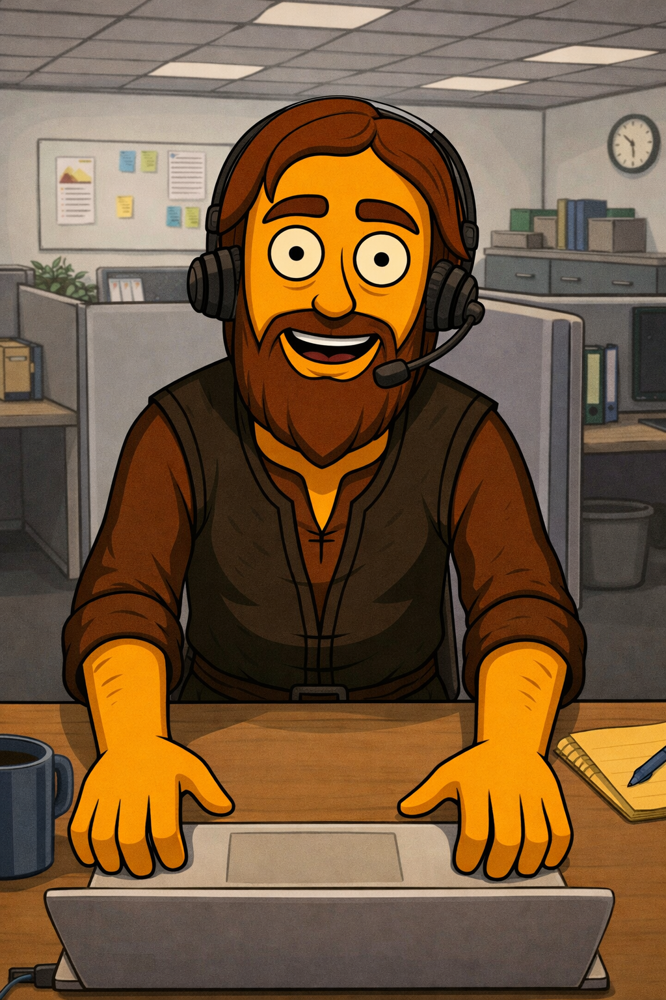

GAME DESIGN & MULTIMEDIA
Additional information and portfolio support
This page provides additional information related to my portfolio, projects and multimedia work

Here you can find supporting material, extra visuals and references connected to my creative and technical projects.